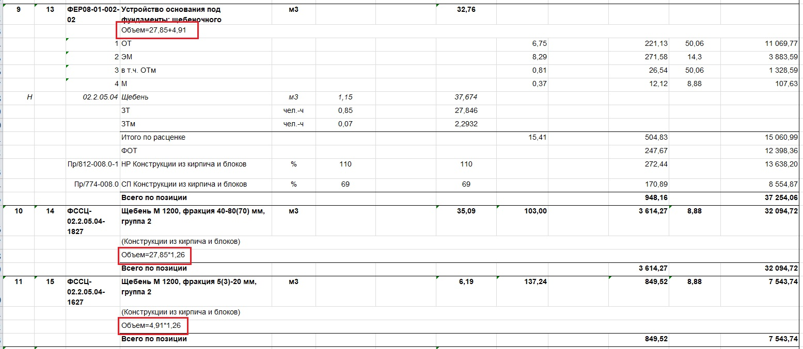

Понятие сметы в строительстве

Смета в строительстве — это документ, который содержит подробный расчет всех затрат, необходимых для реализации процесса строительства или ремонта объекта. Она является важным инструментом планирования бюджета, контроля расходов и оценки стоимости работ.
Основные требования к сметной документации:
Соответствие нормативам: сметная документация должна разрабатываться в соответствии с действующими нормативными правовыми актами, строительными нормами и правилами, а также другими регулирующими документами.
Полнота и достоверность: сметная документация должна содержать полную и достоверную информацию о составе и объеме работ, необходимых материалах и оборудовании, а также затратах на оплату труда и другие расходы.
Обоснованность цен: цены на материалы, оборудование и работы, включенные в сметную документацию, должны быть обоснованными и соответствовать рыночным ценам на момент составления сметы.
Прозрачность и понятность: сметная документация должна быть составлена в понятной и доступной форме, позволяющей легко проверить и проанализировать ее содержание.
Актуальность: сметная документация должна регулярно обновляться и корректироваться с учетом изменений в проекте, ценах и других факторах.
Сметные расчеты основаны на проектной, исполнительной или другой документации, а также на результатах инженерных изысканий. При составлении обязательно необходимо указать наименования работ, единицы измерения, объемы, а также приводить расчеты объемов и расхода материалов с формулами.

Какие сметные расчеты должны быть разработаны в составе сметной документации?
а) сводка затрат (при необходимости);
б) сводный сметный расчет стоимости строительства;
в) объектные сметные расчеты (сметы);
г) локальные сметные расчеты (сметы);
д) сметные расчеты на отдельные виды затрат.
Какие документы влияют на определение сметной стоимости
- Исходные данные заказчика для разработки сметной документации. Заказчик предоставляет ключевые параметры и требования, которые ложатся в основу сметы.
- Предпроектная и проектная документация: чертежи, ведомости объёмов строительных и монтажных работ, спецификации и ведомости потребности в оборудовании, пояснительные записки к проектным материалам;
Для дополнительных работ — листы авторского надзора и акты на дополнительные работы, выявленные в период выполнения строительных и монтажных работ.
- Действующие сметные нормативы, среди которых: государственные элементные сметные нормы (ГЭСН), федеральные единичные расценки (ФЕР) на строительные, монтажные, специальные строительные и пусконаладочные работы, территориальные единичные расценки (ТЕР), сборники сметных норм и расценок на эксплуатацию строительных машин и автотранспортных средств (ФСЭМ), сборники сметных цен на материалы, изделия и конструкции, применяемые в строительстве (ФССЦ), сборники сметных цен на перевозку грузов (ФСПГ).
- Отпускные цены и транспортные расходы на материалы, оборудование, мебель, инвентарь.
- Отдельные решения органов государственной власти, относящиеся к соответствующей стройке.
- Нормативные правовые акты.